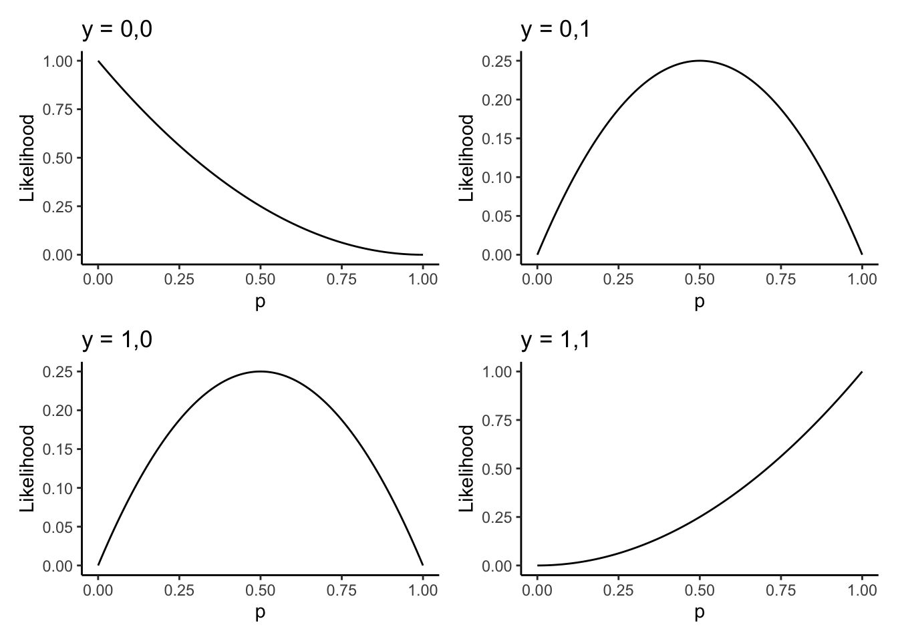
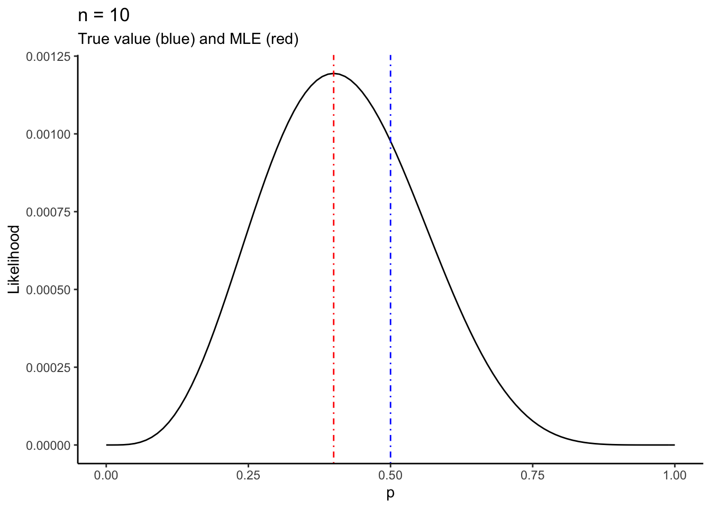

Chapter 8 Supplement to Chapter 21
This chapter implements much of the analysis shown in chapter 21 of A Modern Introduction to Probability and Statistics. R code is given for the simple textbook datasets used in the book, and then the concepts are illustrated on real data.
All datasets from the book can be downloaded here: https://www.tudelft.nl/en/eemcs/the-faculty/departments/applied-mathematics/applied-probability/education/mips/.
The assigned exercises associated with this material are from MIPS, as follows: 21.1; 21.2; 21.3; 21.4; 21.5; 21.6; 21.8; 21.9; 21.11; 21.14. Answers to selected exercises are in the
back of the book. You should also do all the “quick exercises” within chapter 21
(solutions are at the end of the chapter). Use R as much as possible when answering the
questions.
8.1 Maximum Likelihood (Chapter 21)
The concept of Maximum Likelihood, and the Likelihood function itself, is one of the single most important concepts in all of statistics. You need to understand this concept. I find a simulation is helpful.
8.1.1 Example: two coins
Suppose I have two coins in my pocket. One of them has probability of heads \(p_{1} = 0.7\) and the other has probability of heads \(p_{2} = 0.4\). I pull one out and hand it to you. Your task is to guess which coin it is. You are only allowed to flip it once.
To make this concrete, you flip the coin once and observe one realization of a random variable \(X\), which equals \(1\) (heads) or \(0\) (tails) with probability given either by \(p = p_{1}\) or \(p = p_{2}\). But you don’t know which one. Your task is to guess (infer) the value of the probability of heads, \(p\), based on the data, \(X\).
The Maximum Likelihood Principle as quoted in the book says that you should pick the value of \(p\) under which your observed data is the most likely– would occur with the highest relative frequency, if the data-generating experiment were repeated over and over again.
The likelihood function is the probability distribution of the observed data \(X\), treated as a function of the unknown parameter \(p\). That means for every sample you get, you get a different likelihood function. It’s always a function of \(p\), but it’s a different function of \(p\) for different observed data \(X\).
In our example, our likelihood functions for \(X=1\) and \(X=0\) are functions from the set \(\{p_{1},p_{2}\}\mapsto\mathbb{R}\), i.e. they are only defined at the two points \(p = p_{1}\) and \(p = p_{2}\). The distribution of \(X\) is \(\text{Bernoulli}(p)\).
Suppose \(X=1\). The likelihood function \(L(p)\) is then defined by \[\begin{equation} L(p_{1};x = 1) = 0.7, \ L(p_{2}; x = 1) = 0.4 \end{equation}\]
Exercise: derive the likelihood function for tails, \(L(p;x = 0)\).
The likelihood function \(L(p;x)\) is the relative frequency with which the observed value \(X = x\) would be observed in repeated sampling at that value of the parameter \(p\). This is kind of a mouthful. Because the likelihood function is defined in terms of a relative frequency, we can write a simulation that illustrates it. I will do this for \(X = 1\) and then you can do it for \(X = 0\).
# Simulation to recreate the likelihood function for the two-coin example.
# The likelihood function is the relative frequency with which your sample
# would occur in repeated sampling, for a particular value of the parameter.
#
# Suppose you flip the coin and get heads. The likelihood function at p1 = 0.7
# is the relative frequency with which you would get heads if you flipped the coin
# over and over, if p really equalled 0.7.
#
# The likelihood function at p1 = 0.4 is the relative frequency with which you
# would get heads if you flipped the coin over and over, if p really equalled 0.4.
#
# Let's do it:
simulate_likelihood_x1 <- function(p) {
# Make sure p is in the range of possible values
if (!(p %in% c(.7,.4))) stop(stringr::str_c("Wrong value for p. p should be .7 or .4. You gave p = ",p))
# Sample the data repeatedly according to this p
N <- 1000
repeatedsampling <- sample(c(1,0),N,replace = TRUE,prob = c(p,1-p)) # Sample 1/0 with prob p/(1-p), N times
# Return the relative frequency with which x == 1
mean(repeatedsampling == 1)
}
# Check it out:
set.seed(478032749)
simulate_likelihood_x1(.7) # Should be around .7## [1] 0.695## [1] 0.389Exercise: write a simulation for the likelihood function for \(x = 0\). Call it
simulate_likelihood_x0. You should get the following:
## [1] 0.301## [1] 0.6138.1.2 Example: unknown coins, \(n = 2\)
The two-coin example illustrates that ML (Maximum Likelihood) follows human intuition: if I tell you to guess which of two coins I flipped based on the result of one flip, you’re going to try and maximize your chances of being right. You do this by choosing the coin that is most likely to give the result you observed.
The book talks about the likelihood function being popularized by R.A. Fisher in his seminal 1922 paper, On the Mathematical Foundations of Theoretical Statistics. What he actually says is as follows:
We must return to the actual fact that one value of \(p\), of the frequency of which we know nothing, would yield the observed result three times as frequently as would another value of \(p\). If we need a word to characterize this relative property of different values of \(p\), I suggest without confusion that we may speak of the likelihood of one value of \(p\) being thrice the likelihood of another, bearing in mind that likelihood here is not used loosely as a synonym of probability, but simply to express the relative frequencies with which such values of the hypothetical quantity \(p\) would in fact yield the observed sample.
I like this quote, even though the language at that time was less direct than we’re used to now, I think Fisher explains the concept better than any modern textbook I’ve ever read.
The two-coin example is a bit simple, but it is the most intuitive. Let’s extend it to the more realistic case where the parameter \(p\) can be any value in the open interval \((0,1)\). That is, I pull a coin out of my pocket, and you flip it once and have to tell me what you think the probability of heads is.
Exercise: show that the likelihood function here for \(X = 1\) and \(X = 0\) is \[\begin{equation} L(p;x = 1) = p, \ L(p;x = 0) = 1 - p \end{equation}\] or more generally, \[\begin{equation} L(p;x) = p^x (1-p)^{1-x} \end{equation}\]
How do we use the observed data to estimate \(p\)? We find the value of \(p\) which would generate the sample we saw with the highest relative frequency. We maximize the likelihood function, which gives the maximum likelihood estimator \(\hat{p}\).
Let’s do this for this example. The log-likelihood is \[\begin{equation} \ell(p;x) = \log L(p;x) = x\log p + (1-x)\log (1-p) \end{equation}\]
Exercise: show that the unique global maximum of \(\ell(p)\) on the interval \([0,1]\) is \(p = x\).
Why did I use a closed interval here and an open one above? There’s a problem: flipping the coin only once doesn’t really give us enough information to accurately estimate the probability of heads. If you get heads, your best guess is intuitively just going to be \(p = 1\)!
We can see this by plotting the likelihood function:
likelihood <- function(p,x) (p^x) * (1-p)^(1-x)
baseplot <- tibble(x = c(0,1)) %>%
ggplot(aes(x = x)) +
theme_classic() +
labs(x = "p",y = "Likelihood")
leftplot <- baseplot +
stat_function(fun = likelihood,args = list(x = 1)) +
labs(title = "x = 1")
rightplot <- baseplot +
stat_function(fun = likelihood,args = list(x = 0)) +
labs(title = "x = 0")
cowplot::plot_grid(leftplot,rightplot,nrow =1)The likelihood is maximized on the closed interval \([0,1]\) at \(p = 1\) when \(x = 1\) and \(p = 0\) when \(x = 0\). This is the mathematical encoding of your intuition that if the coin is heads, my best guess at the relative frequency of heads is simply that the coin is always heads, because well, I’ve never seen it come up tails!
To get better inferences, we need to flip the coin more than once.
Suppose I flip the coin \(n\) times and observe independent realizations of the random variable \(X\) which takes values \(1\) with probability \(p\) and \(0\) with probability \(1 - p\). I call these random variables \(Y = (X_{1},\ldots,X_{n})\) and I denote their observed values by \(y = (x_{1},\ldots,x_{n})\). So for example if \(n = 2\) then my random variable is \(X = (X_{1},X_{2})\) and if I observed a head and a tail (in that order), my realized values would be \(y = (1,0)\).
Exercise: show that the likelihood function for the observed sample \(y = (x_{1},\ldots,x_{n})\) is \[\begin{equation} L(p;y) = p^{\sum_{i=1}^{n}x_{i}}(1-p)^{n - \sum_{i=1}^{n}x_{i}} \end{equation}\] and the log likelihood is \[\begin{equation} \ell(p;y) = \sum_{i=1}^{n}x_{i}\log p + \left(n - \sum_{i=1}^{n}x_{i}\right)\log (1-p) \end{equation}\] Use the log-likelihood to show that the maximum likelihood estimator \(\hat{p}\) is \[\begin{equation} \hat{p} = \bar{X} = \frac{1}{n}\sum_{i=1}^{n}x_{i} \end{equation}\]
Suppose now that \(n = 2\). There are four possible samples we could get: \[\begin{equation}\begin{aligned} y_{1} &= (0,0) \\ y_{2} &= (1,0) \\ y_{3} &= (0,1) \\ y_{4} &= (1,1) \\ \end{aligned}\end{equation}\] The likelihood functions for each of these are \[\begin{equation}\begin{aligned} L(p;y_{1}) &= (1-p)^{2} \\ L(p;y_{2}) &= p(1-p) \\ L(p;y_{3}) &= p(1-p) \\ L(p;y_{2}) &= p^{2} \\ \end{aligned}\end{equation}\]
We can plot these four (three?) likelihood functions as follows. I’m using some more advanced code here; you should run it slowly, line-by-line, and get a feel for what’s happening.
# Store the four samples in a (named) list
ylist <- list(
"y1" = c(0,0),
"y2" = c(1,0),
"y3" = c(0,1),
"y4" = c(1,1)
)
likelihood <- function(p,y) p^(sum(y)) * (1-p)^(sum(1-y))
makeplot <- function(s) {
plotname <- as.character(ylist[[s]]) %>% stringr::str_c(collapse = ",")
baseplot +
stat_function(fun = likelihood,args = list(y = ylist[[s]])) +
labs(title = stringr::str_c("y = ",plotname))
}
names(ylist) %>%
map(makeplot) %>%
cowplot::plot_grid(plotlist = .,nrow = 2)
Exercise: compute the value of \(\hat{p}\) for each sample. Add a verticle line
to each plot at this point, using geom_vline(xintercept = ?,colour = "red",linetype = "dotdash")
where you replace the ? with the appropriate value. It should look like:
8.1.3 Example: unknown coins, \(n\) bigger than \(2\)
For our last example, let’s flip the coin more times and look just at the likelihood function for our sample.
You can flip a coin with probability of heads p n times in R by using sample(c(1,0),n,replace = TRUE,prob = c(p,1-p)).
You’re going to write a function that takes in \(n\), generates a sample of size \(n\), and plots the likelihood for \(p\) for this sample.
To do this, you need to generate the sample with a known value of \(p\) which we will call \(p_{0}\). You can then compare how your likelihood and MLE (Maximum Likelihood Estimator) look to the true value of \(p\) that you’re trying to estimate, \(p_{0}\).
Start with the following:
You can generate the sample using the statement above. Call it samp. You can then
make the plot using
baseplot +
stat_function(fun = likelihood,args = list(y = samp)) +
labs(title = stringr::str_c("n = ",n)) +
geom_vline(xintercept = p0,colour = "blue",linetype = "dotdash") +
geom_vline(xintercept = mean(samp),colour = "red",linetype = "dotdash") Notice I changed the title too. I also added two verticle lines: one for the true value of \(p\), \(p_{0}\), and one for the MLE from the sample, \(\hat{p}\).
Put these two code chunks together into the above skeleton of a function. Then call your function as follows, and you should get the following output:

Exercise: write the function necessary to produce this output. Then with your new function, run it repeatedly, and with different values of \(n\) and \(p\). Make sure not to reset the random seed each time you run it– you want to see what happens for different samples. Think about the following things:
- How does the shape and location of the likelihood change as you sample the data over and over, for the same \(n\)? Specifically,
- How does the shape and location of the likelihood change when you make \(n\) smaller or larger?
- How does the shape and location of the likelihood change when you change \(p_{0}\)? What happens when you push \(p_{0}\) really close to \(0\) or \(1\)?
8.1.4 Extended example: rental housing in Toronto
Recall the Toronto Rental Housing dataset from Section 2.5 of these supplementary materials. We were interested in estimating the quality of rental housing for the different wards in Toronto, where “quality” is measured by the RentSafeTO score, which is composed of 20 sub-scores on various qualities of each building. We did this by computing the sample mean score in each ward, as follows:
# Read in the data from disk
apartmentdata <- readr::read_csv(
file = "data/apartment-data/toronto-apartment-building-evaluations.csv"
)## Parsed with column specification:
## cols(
## .default = col_double(),
## EVALUATION_COMPLETED_ON = col_character(),
## PROPERTY_TYPE = col_character(),
## RESULTS_OF_SCORE = col_character(),
## SITE_ADDRESS = col_character(),
## WARD = col_character()
## )## See spec(...) for full column specifications.# Clean it up
apartmentclean <- apartmentdata %>%
filter(!is.na(SCORE)) %>% # Remove apartments with missing scores
dplyr::select(ward = WARD,
score = SCORE,
property_type = PROPERTY_TYPE,
year_built = YEAR_BUILT,
address = SITE_ADDRESS
)
glimpse(apartmentclean)## Observations: 3,437
## Variables: 5
## $ ward <chr> "04", "19", "11", "04", "07", "03", "17", "17", "0…
## $ score <dbl> 71, 77, 71, 78, 98, 76, 93, 72, 74, 78, 73, 76, 57…
## $ property_type <chr> "PRIVATE", "PRIVATE", "PRIVATE", "SOCIAL HOUSING",…
## $ year_built <dbl> 1976, 1953, 1948, 1920, 2017, 1967, 2015, 1970, 19…
## $ address <chr> "2350 DUNDAS ST W", "9 STAG HILL DR", "130 MACP…# Make a table of average scores for private residences (i.e. not social housing)
apartmentclean %>%
filter(property_type == "PRIVATE") %>%
group_by(ward) %>%
summarize(avg_score = mean(score))## # A tibble: 26 x 2
## ward avg_score
## <chr> <dbl>
## 1 01 71.5
## 2 02 73.0
## 3 03 70.5
## 4 04 68.2
## 5 05 71.7
## 6 06 72.1
## 7 07 69.8
## 8 08 73.5
## 9 09 67.5
## 10 10 72.2
## # … with 16 more rowsExercise: suppose the data from any single ward follows a Normal model, \[\begin{equation} X_{i} \overset{iid}{\sim}\text{Normal}\left(\mu,\sigma^{2}\right) \end{equation}\] Prove that the maximum likelihood estimator of \(\mu\) is \(\hat{\mu} = \bar{X}\), the sample mean. This justifies the use of the sample mean as an estimate of the average score of all buildings in the ward.
Exercise: now prove that the maximum likelihood estimator for \(\sigma^{2}\) under this model is \[\begin{equation} \hat{\sigma}^{2} = \frac{1}{n}\sum_{i=1}^{n}\left(X_{i} - \bar{X} \right)^{2} \end{equation}\] Argue that based on the “invariance” property of the MLE, this implies that the MLE for the \(\sigma = \sqrt{\sigma^{2}}\) is \[\begin{equation} \hat{\sigma} = \sqrt{\frac{1}{n}\sum_{i=1}^{n}\left(X_{i} - \bar{X} \right)^{2}} \end{equation}\]
Exercise: use the sd() function in R to modify the above code to
compute the MLE for the standard deviation for
each ward.
Exercise: why are we considering each ward separately? Now let \(X_{ij}\) be the score of the \(i^{th}\) building in the \(j^{th}\) ward. Suppose the data follows the model \[\begin{equation}\begin{aligned} X_{ij} &\overset{ind}{\sim}\text{Normal}\left(\mu_{j},\sigma^{2} \right) \\ i &= 1\ldots n_{j} \\ j &= 1\ldots 25 \end{aligned}\end{equation}\] Note that “iid” has been replaced by “ind”, to indicate that the data are independent but not identically distributed, because they have different means \(\mu_{j}\). Note that I have taken the variance \(\sigma^{2}\) to be the same for each ward, which may or may not be a reasonable thing to do.
Prove that the MLE’s for the means and standard deviations are: \[\begin{equation}\begin{aligned} \hat{\mu}_{j} &= \frac{1}{n_{j}}\sum_{i=1}^{n_{j}}X_{ij} \\ \hat{\sigma} &= \sqrt{\frac{\sum_{j=1}^{25}\sum_{i=1}^{n_{j}}\left(X_{ij} - \hat{\mu}_{j} \right)^{2}}{\sum_{j=1}^{25}n_{j}}} \end{aligned}\end{equation}\]